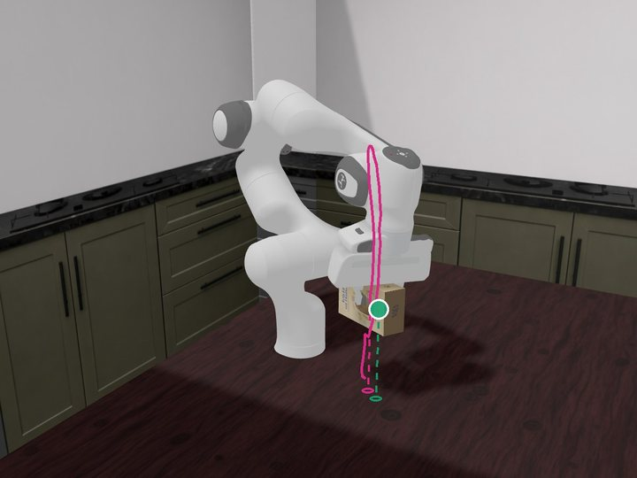
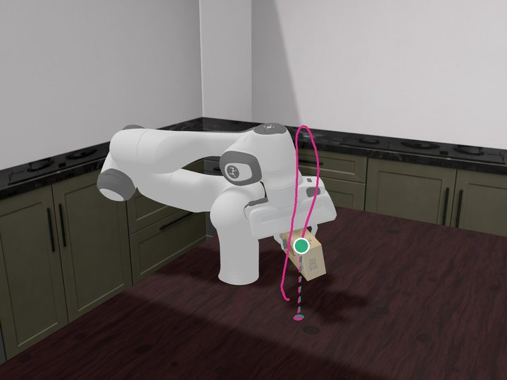
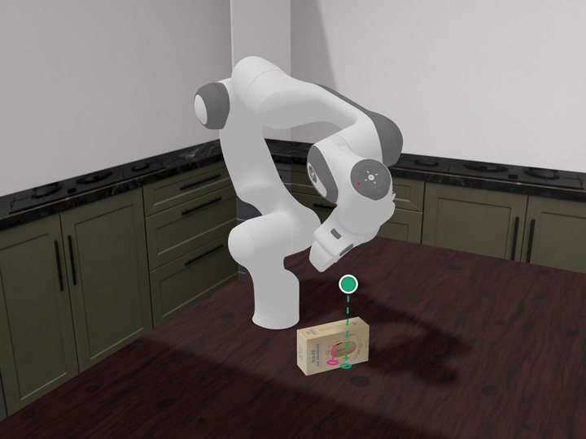
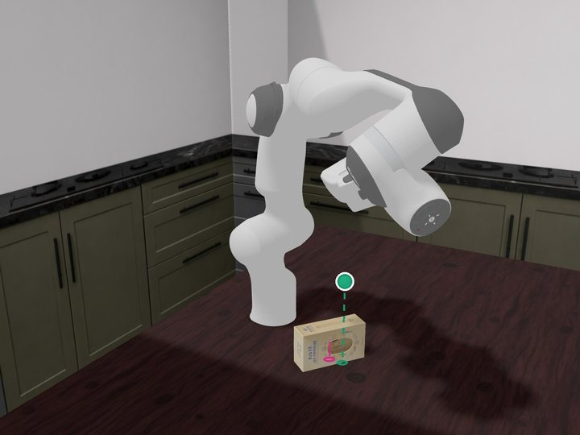
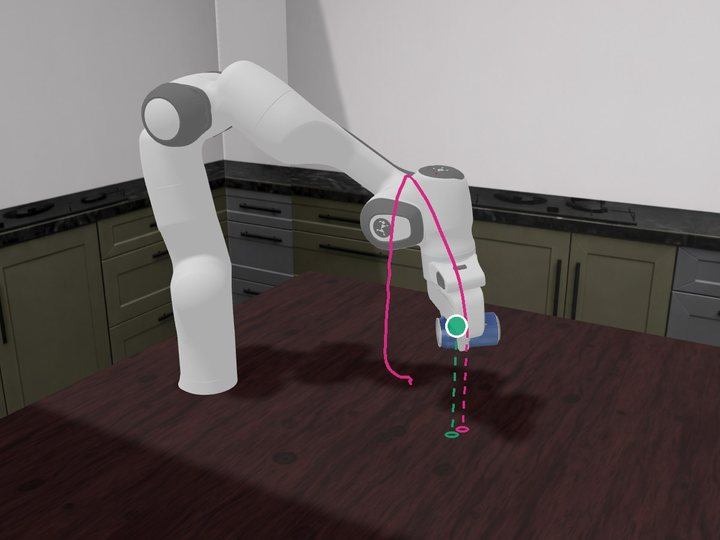
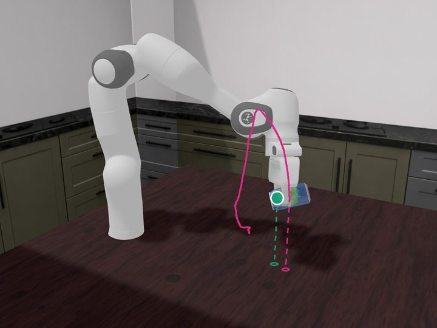
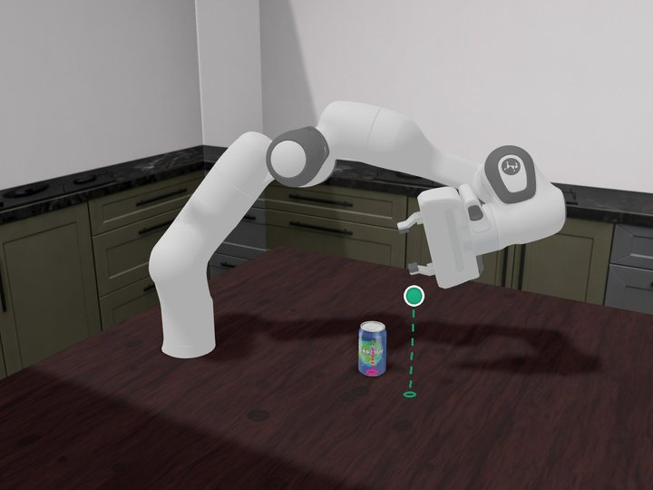
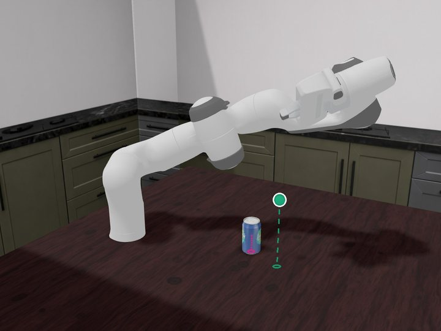
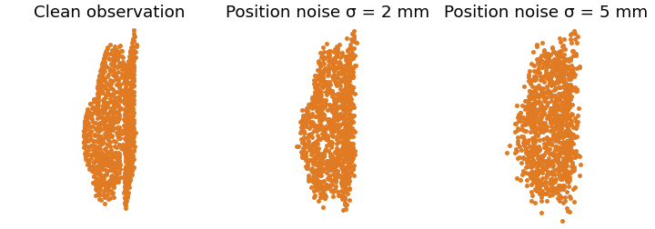

GPWM · Author response
Additional results
New experiments for the questions in the reviews, grouped by reviewer.
Reviewer xb8Q
- 01Can GPWM plan better than a classical simulator?Go to 01 · Planning →
- 02Can it plan dexterous manipulation and cloth folding?Go to 02 · Dexterous hand and cloth →
- 03What is the advantage of being generative?Go to 03 · Generative →
- 04Do the combined components each matter?Go to 04 · Ablations →
- 07What does one model for many domains add?Go to 07 · Gripper swap →
- 09Is there a real-world evaluation?Go to 09 · Real world →
Reviewer wZV8
Reviewer 1hZx
- 04Ablations of the hierarchy, the factorized attention and the pose tokensGo to 04 · Ablations →
- 03Best-of-N error or a distribution-level metricGo to 03 · Generative →
- 01Planning at matched compute, against simulator search and a trained policyGo to 01 · Planning →
- 06The Unified model's specialization gapGo to 06 · Unified model →
- 08Noisy or incomplete particle trackingGo to 08 · Observations →
01 · Planning
xb8Q1hZxPlanning at one compute budget
1hZx“how do results change when baselines get a compute-matched budget, and how does GPWM compare with MPPI or CEM using the true simulator, or with a trained policy?”
xb8Q“it's not clear whether the model can surpass a classical simulator (maybe crafted with an agentic system) in planning.”
Every planner gets the same time on one L40S GPU, and every plan runs open loop in simulation. Task progress is the share of the start distance to the target that the plan closes.
| Task progress, higher is better | Pushing | Pile Manipulation | Picking |
|---|---|---|---|
| GPWM, latent noise optimization | 0.57~260 | 0.23~60 | 0.56~100 |
| GPWM, noise-space CEM | 0.48~570 | 0.21~120 | 0.40~250 |
| GPWM, action-space CEM | 0.00~570 | 0.01~130 | −0.03~250 |
| PointWorld, action-space CEM | 0.01~3k | 0.19~1k | 0.00~800 |
| CEM with the true simulator | 0.18~320k | 0.08~430 | 0.30~720k |
| GNS | 0.03256 | 0.0264 | 0.00128 |
| DP3 policy, closed loop | 0.76 | 0.16 | 0.18 |
100 s per plan for Pushing, 200 s for the other two. Grey numbers count the trajectories each planner evaluated.
What the plans look like

Picking, end state



Picking, end state


Search in the true simulator exploits it
Two of the best Picking plans that CEM finds with the true simulator. Neither grasps the object.
02 · Dexterous hand and cloth
xb8QPlanning dexterous and cloth manipulation
xb8Q“Can this model be used in more complicated planning tasks, like “garment folding”, “dragging a deformable”, or “dexterous manipulation”?”
Dexterous hand
Latent noise optimization plans the hand and the object together in a GPWM model of a dexterous hand. The simulated robot then executes the planned hand (blue) open loop. The model and the plan include only the hand and the object. The rest of the robot is rendered for visualization, and its collisions are not modeled yet, so an object can pass through it.
Knife · target point
Knife · target point
Kettle · target point
Kettle · target point
Kettle · goal pose
Knife · planned without the obstacle
Knife · planned around the obstacle
Green marks the target. The red sphere is the obstacle and turns solid while the knife is inside it. Every plan shown lifts the object and still holds it 15 to 23 cm above the table at the end.
Cloth
The same search in the model's noise plans two grippers and a cloth together. The plans are executed in the cloth simulator.
Fold with two grippers
Lift by 10 cm
Drag right
Drag left
03 · Generative
xb8Q1hZxWhat being generative allows GPWM to do
xb8Q“Although claiming the model to be “generative”, it doesn't show the advantage of being “generative”.”
1hZx“could you report best-of-N error or a distribution-level metric, rather than a single sample against one recorded future?”
Plan by searching its noise
GPWM generates the actuator together with the scene, so a planner can search the model's noise instead of raw actions. With the same checkpoint, the same CEM optimizer and the same budget, only the noise search makes progress.
| Task progress, higher is better | Pushing | Pile Manipulation | Picking |
|---|---|---|---|
| Search the latent noise | 0.48 | 0.21 | 0.40 |
| Search raw actions | 0.00 | 0.01 | −0.03 |
More planning results01 · Every planner and budget →02 · Dexterous hand and cloth →
Sample several plausible futures
10 samples per episode from the same observed frames, on all 400 held-out Free Fall episodes. A deterministic rollout of the same network beats one sample on error but shrinks and flattens objects.
| 400 episodes | Error (mm) | Object size |
|---|---|---|
| One sample | 38.0 | 93% |
| Best of 2 samples | 34.8−8% | – |
| Best of 5 samples | 31.7−16% | – |
| Best of 10 samples | 29.9−21% | – |
| Deterministic rollout | 36.1 | 90% |
The deterministic rollout predicts each window in one step from pure noise, which gives the network's mean prediction. Object size is the radius of gyration at the last frame, relative to the truth. The samples shown are the three of the 10 that best keep object size, at least 20 mm apart.
↑ Questions04 · Ablations
1hZxwZV8xb8QWhich design choices matter
1hZx“Could you add ablations for the multi-resolution hierarchy, the factorized attention, and the rigid-body pose tokens”
Each architecture variant trains from scratch for 24 L40S GPU-hours. We also ablate diffusion forcing with the retrained Garment Folding specialist.
| Free Fall, 24 GPU-hours | Error (mm) | Steps |
|---|---|---|
| GPWM | 51.9 | 55k |
| No hierarchy | 62.6+21% | 10k |
| Absolute coordinates, no 3D RoPE | 56.8+9% | 54k |
| Joint space-time attention | 56.8+9% | 35k |
| Garment Folding, 898 frames | Error (mm) |
|---|---|
| GPWM | 8.9 |
| Without diffusion forcing | 12.2+37% |
Free Fall on 400 held-out episodes. Garment Folding is the Chamfer distance on the 20 held-out folds with the most motion.
Rigid-body pose tokens
On Pick and Place, plain particles bend the held object. Pose tokens keep it exactly rigid.
| Pick and Place, 200 episodes | Pose tokens | Plain particles |
|---|---|---|
| Object error (mm) | 12.5 | 13.3 |
| Rigidity error, mean (mm) | 0.0 | 4.0 |
| Rigidity error, final frame (mm) | 0.0 | 6.9 |
Both models trained for 160k steps. Object error leaves out the gripper, whose motion is given. Rigidity error is the distance of the held object from the best rigid copy of its starting shape, averaged over the rollout or at the last frame. In the two episodes shown, plain particles deform the held object by 5.2 and 3.0 mm on average, against 4.0 mm over all 200.
↑ Questions05 · PhysiFormer
wZV8PhysiFormer on Free Fall
wZV8“Comparison with the closely related PhysiFormer, which is discussed but not evaluated, would clarify the advance.”
PhysiFormer is trained from the authors' code at about 100M parameters on the same Free Fall data, and scored with the protocol of Table 1.
PhysiFormer denoises absolute positions, so the motion is a small part of what it generates. GPWM and PhysCtrl predict motion relative to the observed frames.
100 held-out clips, 4 observed frames and 45 predicted, one sample. GPWM is the Free Fall specialist of Table 1. PhysiFormer and PhysCtrl at 80k training steps.
↑ Questions06 · Unified model
wZV81hZxThe retrained Unified model
wZV8“The Unified model is substantially larger than the specialists yet is less accurate on five of six domains”
1hZx“what causes its specialization gap: capacity, data balance, or interference between domains?”
One set of weights for all six domains. Retrained, it beats every baseline on five domains and our own specialists on two.
| Error (mm), lower is better | Free Fall | Dragging | Garment Folding | Pushing | Pick and Place | Dexterous Hands |
|---|---|---|---|---|---|---|
| Graph- or grid-based | 97.2 | 30.4 | 20.5 | 23.9 | 68.2 | 26.7 |
| PointWorld | – | – | 10.6 | 28.7 | 39.8 | 27.4 |
| PhysCtrl | 53.0 | 7.8 | 10.7 | 24.5 | 34.1 | 24.8 |
| GPWM, specialists | 40.0 | 6.5 | 8.9 | 13.3 | 12.5 | 18.7 |
| GPWM, Unified | 41.5 | 6.1 | 10.8 | 18.0 | 11.1 | 22.6 |
Revised Table 1, best per domain in blue. Garment Folding is the Chamfer distance over 898 frames on the 20 held-out folds with the most motion. The Garment Folding specialist uses the diffusion forcing rollout of section 04.
↑ Questions07 · Gripper swap
xb8QFolding with a gripper the folding data never had
xb8Q“Having a unified design of particle simulator for diverse phenomena is also not new”
A Panda gripper replaces the folding robot's gripper on the same path. The Unified model saw the Panda only in pick-and-place data.
| Cloth error (mm) | Unified model | Folding specialist |
|---|---|---|
| The folding robot's gripper | 10.1 | 9.9 |
| A Panda gripper | 10.9 | 12.2 |
| Reference, cloth that does not move | 18.2 | 18.2 |
Distance of each cloth point from its recorded position over the grasp, carry and release (frames 259 to 606), restarted from the recording at frame 255, on 10 held-out folds. Table 1 scores whole folds by Chamfer distance.
08 · Observations
wZV81hZxNoisy and mis-tracked observations
1hZx“How sensitive is the model to noisy or incomplete particle tracking, which a real deployment would face?”
We corrupt the 4 observed frames and score the prediction against the clean truth, on 400 held-out Free Fall episodes. A swapped track gives two neighbouring particles of one object each other's history.
| Corrupted observed frames | Error (mm) |
|---|---|
| None | 38.0 |
| Position noise, σ = 2 mm | 40.2+6% |
| Position noise, σ = 5 mm | 48.7+28% |
| 5% of tracks swapped | 38.5+1% |
| 10% of tracks swapped | 39.3+3% |
| 25% of tracks swapped | 40.9+8% |

Position noise on one observed object, close up
Swapped tracks in the 4 observed frames, seen from the side. The last frame stays correct, only the history is wrong.
09 · Real world
xb8QPick and place on a real robot
xb8Q“The planning experiment is limited. It only conducts 3 tasks, and no sim2real experiment is shown.”
For each trial, GPWM plans with latent noise optimization at the same budget as Picking in the planning table, and the robot executes the plan open loop.
Robot footage plays at 2x speed.
↑ Questions